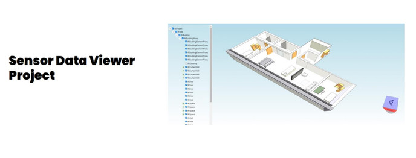
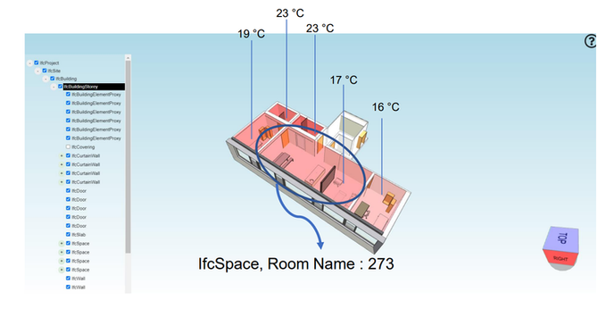
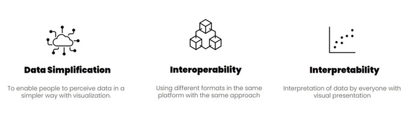
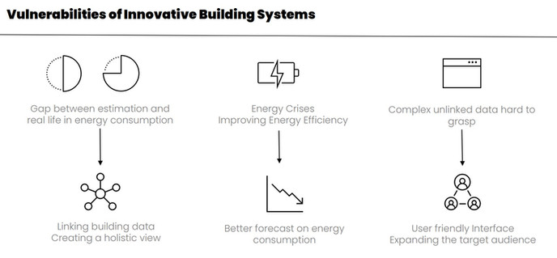
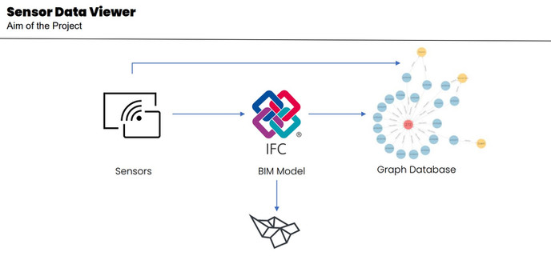
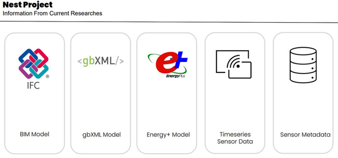
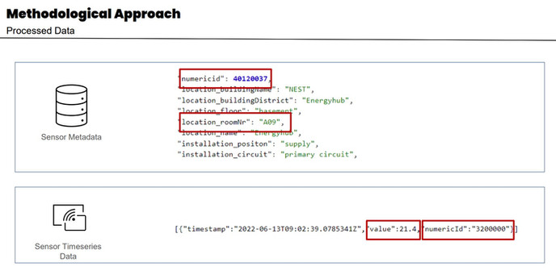
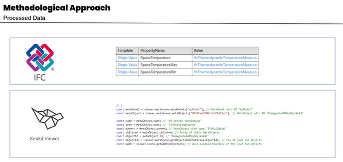
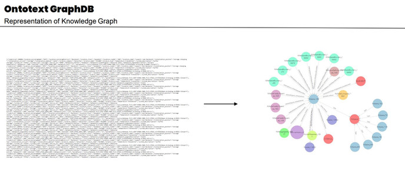
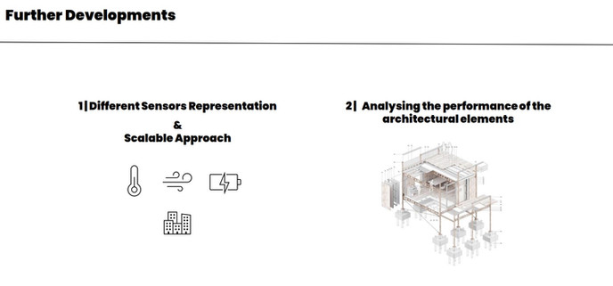

This project is conducted as part of the collaboration between the Construction and Robotics Master's program | RWTH Aachen and the EMPA Research Institute, with the supervision of Jakob Beetz and James Allan, Fazel Khayatian, Hanmin Cai and the contribution of Elif Akbas.
The Sensor Data Viewer Project aims to visualize temperature sensor data obtained from the server of the NEST Research Building and integrate different types of data. The project links the IFC model of the building with temperature sensor data and uses IFC visualizer (Xeokit) to create a user-friendly interface.



To achieve better forecasting, monitoring data, and connecting the consumption with internal-building related, and external-user, climate related factors should be processed. Collecting data through sensors and IoT devices, maintenance of this data, forming useful and understandable output can be helpful to create more accurate predictions.

BIM models are also machine readable information format contains geometry and further about the building, therefore convenient context to constitute a linking system, or a pattern for diverse data. Linking diverse data through BIM Models, presents data in a easily graspable way, and defining efficient usage of new technologies in the building environment makes interoperability and simplification of data very valuable

The Sensor Data Viewer Project aims to visualize temperature sensor data obtained from the server of the NEST Research Building and integrate different types of data. The project links the IFC model of the building with temperature sensor data and uses IFC visualizer (Xeokit) to create a user-friendly interface.

”Room number” served as the foundation for all element-related input, and the BIM model, Time Series Data, and energy estimations all share a common room number value. As a result, the building’s room number values are identical by the Revit Model, ”IfcSpace” elements, and Time Series Data values, which all respond to spaces as a common aspect. Due to the comprehensiveness of their geometry, IfcSpace elements acted as a bridge between, as well as an element that could project information.


Xeokit SDK is a toolkit to program the BIM viewer, it contains plugins and various functions in Javascript language, and runs in the browser via HTML files, some examples are shown on the Github page. In addition to the SDK, Xeolabs provides a BIM Viewer application unrelated to our project, the xeokit-metadata tool creates the model hierarchy and the xeokit-conver tool converts the IFC file to the native XKT Xeokit format

